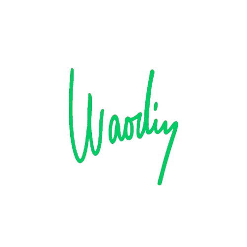

Cvičení pro mě není jen fyzická aktivita. Je to způsob, jak se spojit sám se sebou. Jak zklidnit hlavu a rozhýbat tělo. Jak najít disciplínu, když se všechno kolem rozpadá. V posilovně nebo venku s vlastní vahou. Nejde o to vypadat dobře na fotce – jde o to být silný, když přijde krize. A ty přicházejí.
Cvičení je moje kotva.
Moje jistota.
Můj způsob, jak být každý den trochu lepší, než jsem byl včera.
Nezáleží jen na tom, jak tělo vypadá. Ale co všechno říká. Říká, jak žiješ. Jak spíš. Co jíš. Jak se o sebe staráš. Tělo nelže. Neschováš za něj výmluvy. Ať už se cítíš dobře, nebo ne – tělo to ukáže. A právě v tom je cvičení brutálně upřímné. Každý trénink je hlasování: hlasuju pro sílu. Pro vůli. Pro respekt k sobě. Každý trénink je připomínka, že na sobě makám – i když se mi nechce.
Svaly jsou jen bonus. Síla je v hlavě. Ve vytrvalosti. V tom, že neustoupíš, i když máš chuť všechno vzdát. Síla je o tom jít na trénink, i když je venku tma a prší. Síla je o tom vstát, i když tě všechno bolí. Cvičení tě učí zvládat tlak. Bolest. Nepohodlí. A když zvládneš tohle, zvládneš víc i v životě.
Nejsi jen silnější fyzicky – ale i psychicky.
Největší síla je v opakování. V tom, že cvičíš, i když nemáš náladu. Že držíš rámec. Ranní protažení. Pravidelný pohyb. Něco, co děláš pro sebe – ne pro lajky. Nemusíš jet podle tabulek. Stačí vědět, co děláš a proč. A držet si v tom rytmus. Cvičení není jednorázový sprint. Je to dlouhá cesta. A čím víc ji žiješ, tím víc se stává součástí tebe.
Necvičím věci, které ničí tělo. Nejdu za výkonem za každou cenu. Neporuším techniku kvůli egu. Nehoním čísla na čince, pokud za nimi není kontrola. Nesrovnávám se s ostatními. Nesoutěžím s Instagramem. Cvičím tak, abych byl zdravý. Funkční. Schopný zvládnout reálný život. Cvičení mě má posilovat, ne ničit. A hlavně – má mi dávat smysl.
Jednoduchost. Vlastní váha. Činky. Základní pohyby. Dřepy, shyby, kliky, mrtvý tah. Nehoním složitosti. Hledám sílu v základech. V tom, co funguje po generace. Přidávám postupně. Tělo poslouchám. Netlačím ho tam, kde ještě není připravené. Ale zároveň si neustupuju. Každý trénink si zapisuju. Vím, kde jsem a kam jdu.
Není každý den stejný. Ale držím si strukturu. Ráno protahuju. Cvičím 3–4× týdně. Ne víc – ale naplno. Každý trénink má začátek, cíl a konec. Nechodím si jen „zacvičit“. Jdu si něco dokázat. Tělu i hlavě. Když tělo říká dost, nejdu přes čáru. Ale když hlava fňuká, právě tehdy přidám.
Rozlišuju mezi leností a únavou.
Když cvičím, moje hlava zpomalí. Zpřesní se. Zmizí chaos. Jsem v těle. V pohybu. V přítomnosti. A právě proto cvičím. Ne kvůli bicepsu. Ale kvůli klidu. Cvičení je moje terapie. Můj způsob, jak zpracovat napětí. Vztek. Strach. Místo, kde nemusím mluvit – ale kde všechno ventiluju.
Tělo je nástroj. A nástroje se udržují. Kalí. Čistí. Posilují. Ne kvůli egu – ale kvůli připravenosti. Chlap má být připravený. Na výzvu. Na těžký den. Na zodpovědnost. Slabé tělo znamená slabý rámec. A já nechci být slabý. Chci být pevný. Ne kvůli obdivu.
Každý den se můžu rozhodnout. Zda si to ulehčím – nebo jestli se postavím výzvě. Cvičení mi každý den připomíná, že síla není zadarmo. Že růst bolí. Ale že to stojí za to. Protože skrze bolest rostu. Skrze únavu sílím. A skrze disciplínu si stavím pevný rámec.
Nejen pro tělo – ale pro život.
